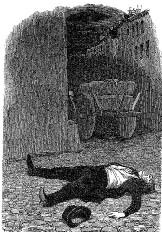

12 Nisan 1897, sabah 9
Aziz Rahip, kesinlikle iki ayrı kişiyiz. Elimde kanıtım var.
Bu sabah –sekiz civarında– uyanmıştım (kendi yatağımda) ve henüz geceliğim üstümdeyken çalışma odasına gitmiştim ve orada aşağıya doğru sıvışmaya çalışan kara bir siluet gördüm. Bir bakışta birinin kâğıtlarımı dağıttığını fark ettim ve neyse ki elimin altında bulunan canlı bastonumu kaptığım gibi dükkâna indim. Kara gölgenin uğursuz karga misali sokağa çıktığını gördüm, peşine düştüm –ya talihsizliğimden ya da münasebetsiz konuk kaçışını ayarladığı için– orada olmaması gereken bir tabureye takıldım.
Kınını çıkardığım bastonumla topallayarak çıkmaz sokakta koşmaya başladım: Ah ne sağda ne solda görünür biri vardı. Ziyaretçim kaçmıştı. Ama yemin ederim sizdiniz o. Öyle ki evinize baktığımda yatağınız boştu.
12 Nisan, öğle
Yüzbaşı Simonini,
(yatağımda) uyanır uyanmaz iletinize yanıt veriyorum. Yemin ederim ki bu sabah sizin evinizde olmam mümkün değildi, çünkü uyuyordum. Ama on bir sularında kalkar kalkmaz siz olduğunuzdan emin olduğum bir şahsın görüntüsüyle dehşete kapıldım; giysilerin asılı olduğu koridor boyunca kaçıyordu. Üzerimde geceliğimle sizi, kendi dairenize kadar izledim, hayalet gibi alttaki pis dükkânınıza inip kapıdan sıvıştınız. Ben de bir tabureye takıldım ve Maubert Çıkmazı'na çıktığımda şahıstan geriye iz kalmamıştı. Ama yemin edebilirim ki o sizdiniz, doğru düşünüp düşünmediğimi söyleyin yalvarırım...
12 Nisan, ikindinin erken saatleri
Aziz Rahip,
neler oluyor bana? Olasılıkla hastayım ve sanki arada bir bayılıp yeniden ayılırmışım gibi olduğunda güncemde sizin bir müdahalenizle karşılaşıyorum. Aynı kişi miyiz? Mantıkla değilse bile iyi niyetle bir an düşünün: Eğer ikimizin karşılaşması aynı saatte yaşansaydı, bir yanda benim, öteki yanda sizin var olmanız mümkündü. Ama ikimiz de kendi deneyimlerimizi farklı saatlerde yaşamışız. Elbette eve girdiğimde kaçan birini görürsem o birinin ben olmadığından emin olurum ama ötekinin siz olduğuna ikna olmam için fazla bir dayanağım yok; sabah ikimiz de evde miydik?
Eğer evde sadece ikimiz var idiysek buradan bir çelişki doğuyor. Siz sabahın sekizinde benim eşyamı karıştırdınız ve ben sizin peşinize düştüm. Sonra saat on bir gibi ben gidip sizin eşyanızı karıştırdım ve siz benim peşime düştünüz. İyi ama neden her birimiz kendi evine ötekinin girdiği saati hatırlıyor da, kendinin ötekinin evine girdiği saati hatırlamıyor?
Elbette unutmuş, unutmak istemiş olabilirdik ya da herhangi bir nedenle bundan söz etmemiştik. Ama söz gelişi ben mutlak bir içtenlikle hiçbir şeyi saklamadığımdan eminim. Öte yandan iki kişinin eşzamanlı ve simetrik olarak öteki hakkında bir konuyu saklama arzusu sadece romanlarda olur diye düşünüyorum; Montépin bile böyle bir konu işleyemezdi.
Daha akla bir yakın varsayım olarak oyunda üç kişi olabileceğini düşünüyorum. Son derece gizemli bir Bay Gizem sabahın en erken saatlerinde benim evime giriyor, ben de siz olduğunuzu sanıyorum. Aynı Bay Gizem saat on birde sizin eve sızıyor ve siz de ben olduğumu düşünüyorsunuz. Çevrede bu kadar çok casus varken bu size olanaksız görünüyor mu?
Ama bu gene de bizim iki ayrı kişi olduğumuzu onaylayan bir gerçek değil. Kişi, Simonini olarak Bay Gizem'in saat sekizdeki ziyaretini hatırlar, sonra unutur ve sonra Dalla Piccola olarak Bay Gizem'in saat on birdeki ziyaretini yeniden hatırlayabilir.
Bütün bu öykü gene de bizim kimliğimizle ilgili sorunu çözemez. Sadece rahatça evlerimizde dolaşan üçüncü bir kişi yaratarak, her ikimizin (ya da aynı kişiysek birimizin) hayatını daha karmaşık bir hale getirir.
Ya bir de dört kişiysek? Gizem 1 saat sekizde bana geliyor, Gizem 2 on birde size uğruyor. Peki, Gizem 1 ve Gizem 2 arasında ne ilişki var?
Ama nihayetinde, size gelen Bay Gizem'i izleyenin ben değil de siz olduğundan iyice emin misiniz? İtiraf edin, güzel bir soruydu bu.
Her ne olursa olsun, sizi uyarıyorum. Canlı bastonum var. Evde bir başka siluet gördüğüm anda kim olduğuna bakmam, kılıcımı çekerim. Onun ben olması ve benim kendimi öldürmem zor. 1 ya da 2 numaralı Bay Gizem'i öldürebilirim. Ama sizi de öldürebilirim. Onun için ayağınızı denk alın.
12 Nisan, akşam
Sözleriniz, derin bir uyuşukluktan uyanırmışım gibi sarstı beni. Ve rüyalarda olduğu üzere, zihnimde Doktor Bataille'ın görüntüsü belirdi (iyi ama kimdi o?); Auteuil'de gayet çakırkeyif bir halde bana küçük bir tabanca uzatıyor ve şöyle diyordu: "Korkuyorum, fazla ileri gittik, masonlar bizim ölümüzü istiyorlar, silahlı dolaşmamız daha iyi olur." Korkmuştum, tabancadan çok tehditti beni korkutan, çünkü masonlarla pazarlık edebileceğimi biliyordum (neden?) ve ertesi gün tabancayı burada, Maître Albert Sokağı'ndaki evin çekmecelerinin birinin dibine tıkmıştım.
Bugün öğleden sonra beni korkuttunuz ve gidip açtım o çekmeceyi. Tuhaf bir duygu doğdu içime, sanki bu hareketi ikinci kez yapar gibiydim ama sonra toparlandım. Rüyalar uzak dursun. Akşam altıya doğru dikkatli bir şekilde cins cins giysilerin asılı durduğu koridordan sizin eve yöneldim. Karanlık bir siluetin bana yaklaştığını gördüm; öne doğru eğilerek yürüyen şahsın elinde sadece mum vardı; siz olabilirdiniz o Tanrım, ama ben artık takmıştım kafaya; ateş ettim ve o ayaklarımın dibine devrildi ve bir daha kımıldamadı.
Ölmüştü, yüreğine saplanan tek bir kurşunla. Hayatında ilk ve umarım son kez ateş eden ben birini öldürmüştüm. Ne korkunç.

Ölmüştü, yüreğine saplanan tek bir kurşunla.
Ceplerini karıştırdım: Sadece Rusça yazılmış mektuplar vardı. Sonra yüzüne baktım: Çıkık şakak kemikleriyle, Kalmuklar gibi biraz aşağı çekik gözleriyle beyaza yakın sarı saçlarıyla kesinlikle Slav ırkına ait biriydi. Ne istiyordu peki benden?
Bu cesedi evde tutamazdım, onu sizin mahzene taşıdım, lağıma açılan kapağı açtım, bu kez aşağıya inme cesaretini bulabildim ve büyük zorlukla cansız bedeni basamaklardan aşağı sürükledim; iğrenç kokulu hava yüzünden birkaç kez soluksuz kalarak onu sadece öteki Dalla Piccola'nın kemiklerinin olacağını sandığım yere taşıdım. Oysa iki sürprizle birden karşılaştım. Birincisi şuydu: Yeraltının onca buharı ve küfü, –çağımızın ecesi bilim dalı– kimyanın bazı mucizeleri sonucu benim cansız bedenimi, evet, iskelete döndürmüştü ama deriye benzer birtakım parçaların kalmasıyla da mumyayı andıran insani bir forma sokmuştu. İkincisi ise sözde Dalla Piccola'nın yanı sıra burada iki ceset daha olmasıydı; ikisi de çürüme aşamasında olan, bir tanesi rahip giysili bir erkek, öteki de yarı çıplak bir kadındı ve tuhaf bir biçimde her ikisi de bana son derece tanıdık göründüler. Yüreğimde fırtınalar, zihnimde yakışıksız görüntüler yaratan bu cesetler kime aitti? Bilmiyorum, bilmek istemiyorum. Ama ikimizin öyküleri sandığımızdan da karmaşık.
Şimdi gelip bana sizin de başınıza benzer bir şey geldiğini anlatmayın sakın. Bu kesişen rastlantılar oyununa daha fazla katlanamayabilirim.
12 Nisan, gece
Aziz Rahip, ben sağda solda dolaşıp da adam öldürmüyorum – en azından nedensiz olarak. Ama inip, senelerden beri bakmadığım kanalizasyonu kontrol ettim. Tanrım, cesetler gerçekten de dört tane olmuş. Birini asırlar önce ben atmıştım, ötekini de bu akşam siz indirdiniz; peki öteki ikisi?
Kim benim lağımıma gelip de ceset dolduruyor?
Ruslar mı? Ne istiyor Ruslar benden – sizden – bizden?
Oh quelle histoire!